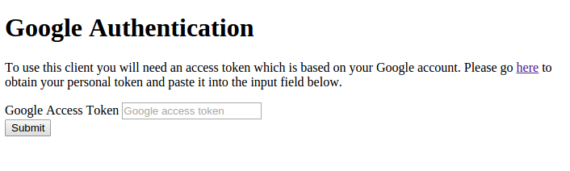
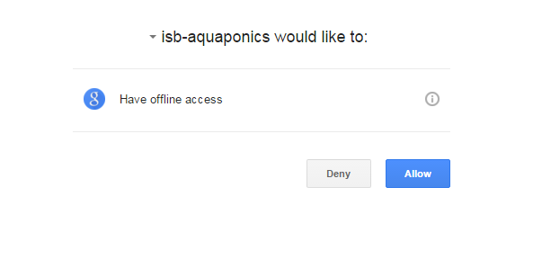
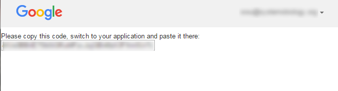
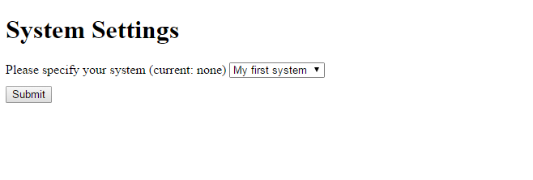
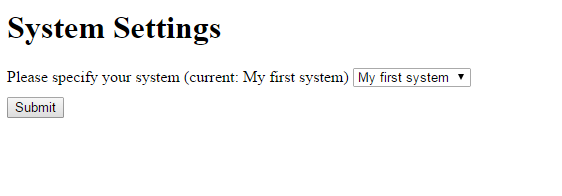

Vernier Client for Project Feed 1010 Manual
Installation on Windows
Unzip vernier_client.zip
cd <your path>\vernier_client
vernier_client
Remark:
Windows most likely will ask for permission access to network
features, please click "Allow"
Authenticating the client
a. Open your web browser at http://localhost:8080

On first use, the browser will require you to login to Google and
ask you to allow access. Please click "Allow"

b. Copy the toking string from the result page and
copy it into the field in your vernier_client browser application.
Click "Submit"

Selecting the system to measure

On success, the browser will prompt you with your systems
that you created. Select the one that you will be measuring for
and hit "Submit"
Your system is now submitting the measurements to the service

Notes:
- Please leave the command line window open while you are measuring.
If you want to shut down the system, simply hit Ctrl-C to exit
- Don't use Logger/Logger Pro at the same time as vernier_client, as this will prevent the either software from recognizing the sensors